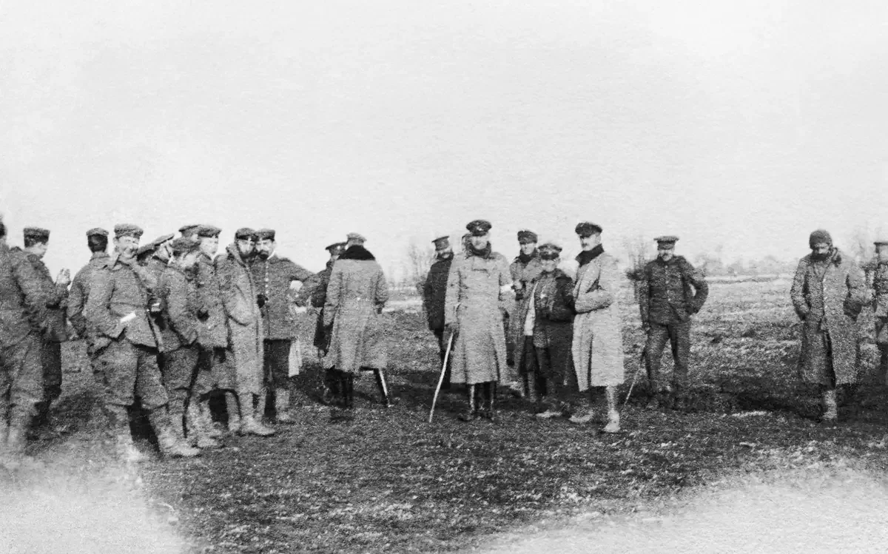
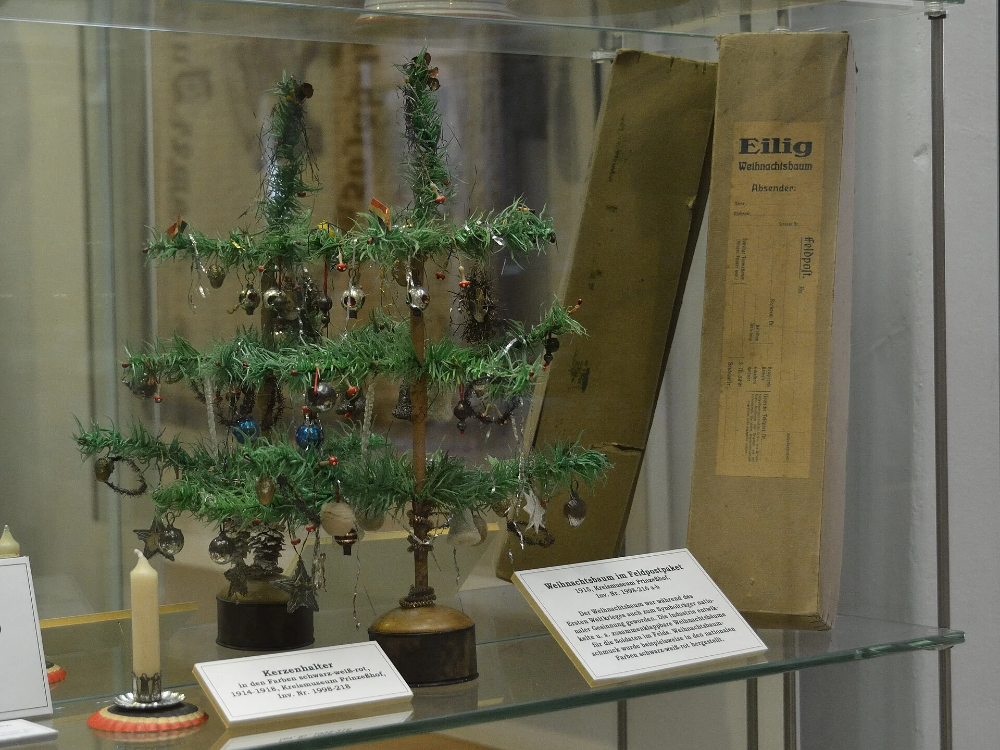
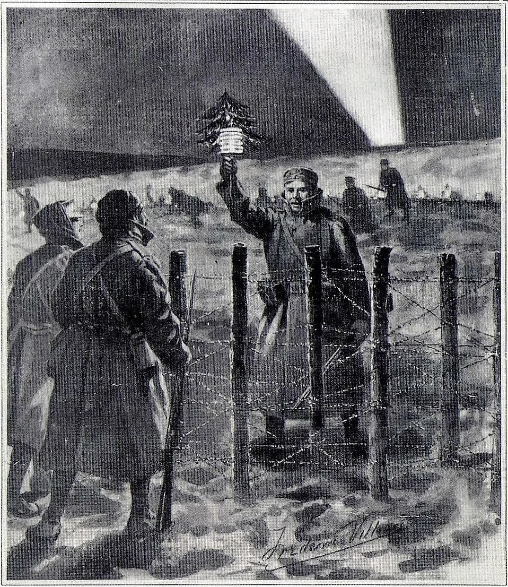
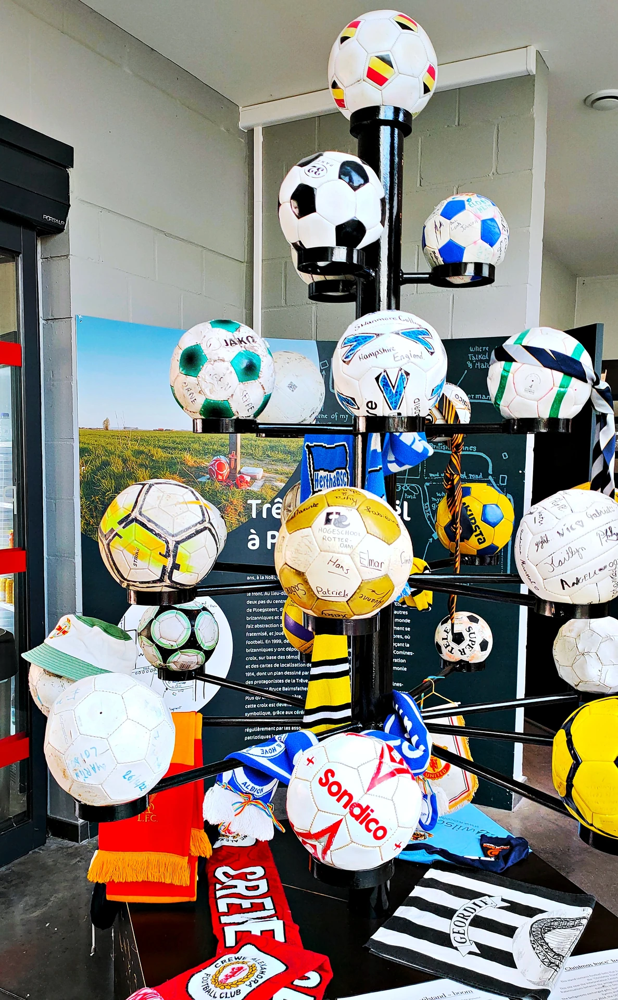
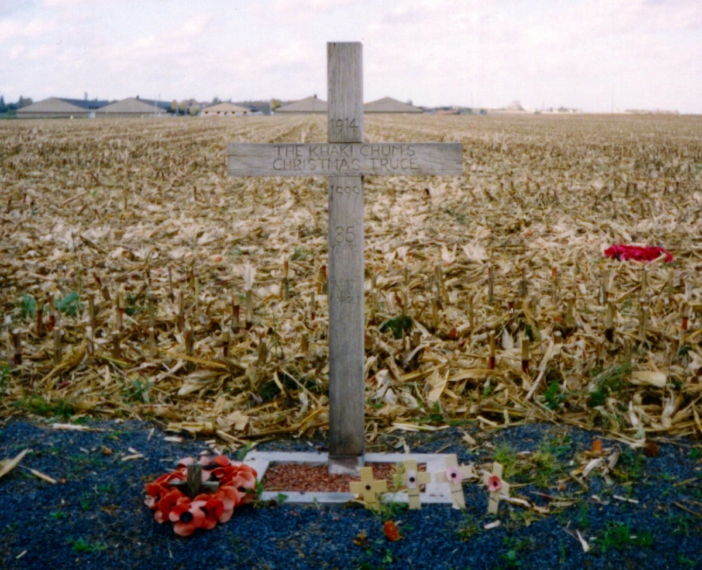
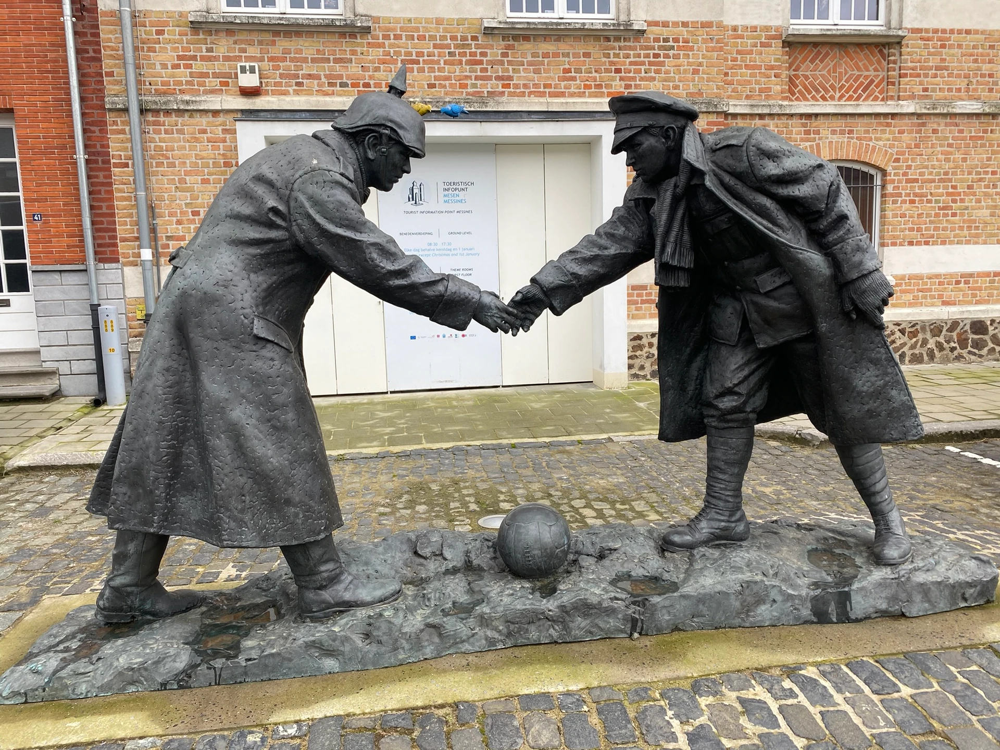

아직 펼치지 않은 카드성탄을 노래하다 · 31914년 성탄 휴전전쟁 한가운데, 서로 총을 겨누던 군인들이 한자리에 모였어요. 무슨 일이 있었던 걸까요?군인 아저씨들이 모여 있어. 서로 싸우던 사람들인데, 왜 같이 있을까?
1914년 12월 24일 밤벨기에·프랑스 서부전선 · 참호 사이 ‘무인지대’
1914년 성탄 휴전
제1차 세계대전의 첫 성탄 전야. 진흙 참호에서 서로를 겨누던 병사들의 눈앞에, 맞은편 참호 위로 작은 불빛들이 떠올랐어요. 깜깜한 그림을 문질러 그 밤의 불빛을 찾아보세요.
전쟁 중이던 성탄 전날 밤, 깜깜한 들판 건너편에 작은 불빛이 반짝였대. 그게 뭐였을까? 같이 비춰 볼까?
검수 전 시안이에요(기준서 1판). 그 밤의 일은 병사들이 남긴 편지·일기·증언과 영국 전쟁기념관(IWM)의 정리를 따랐어요. 축구 이야기처럼 기록이 엇갈리는 것은 그렇다고 밝혔어요. 상상은 ‘눈 감고 상상해 보기’에서만 해요.
시안 확인용카드 단계 미리 보기
1
성탄 전에는 끝난다더니
1914년 여름에 시작된 전쟁은 성탄 전에 끝나리라던 말과 달리 겨울까지 이어졌어요. 벨기에와 프랑스 땅을 가로질러 판 참호에서, 병사들은 진흙과 추위 속에 서로를 겨누고 있었어요.
12월 7일, 교황 베네딕토 15세는 천사들이 노래한 그 밤만이라도 총소리가 멈추기를 호소했어요. 하지만 나라들은 공식적인 휴전을 받아들이지 않았어요.

그 무렵 독일 병사들에게는 고향에서 보낸 성탄 나무가 수천 그루 도착했어요. 많은 나무가 참호의 흙벽 위에 세워졌어요.
전쟁이 성탄까지 끝나지 않았어. 병사들은 춥고 질척한 참호에서 성탄을 맞았대.
물어보기전쟁터에서 성탄을 맞는 병사들은 무엇이 가장 그리웠을까?
2
참호 위의 불빛
12월 24일 밤, 영국군 병사들은 맞은편 독일군 참호를 따라 등불과 작은 전나무들이 늘어선 것을 보았어요. 이어 캐럴과 노래 소리가 들려왔어요.
깜깜한 그림을 손가락으로 문질러, 그 밤의 불빛을 찾아보세요.
손가락이나 마우스로 깜깜한 그림을 문질러, 그 밤의 불빛을 찾아보세요.

「참호 속 평화의 빛」, 1915년 1월 9일 「일러스트레이티드 런던 뉴스」 1면 · 프레더릭 빌리어스 그림 · 퍼블릭 도메인 · 위키미디어 공용
빛이 닿으면 숨은 표시가 나타나요.
불빛 하나가 무인지대를 건넜어요. 그 밤 서부전선 곳곳에서 노래가 오갔고, 이튿날 아침 병사들은 참호 밖으로 나왔어요.
한쪽이 노래하면 맞은편이 다른 노래로 답했어요. 영국군이 「참 반가운 신도여」를 부르자 독일군은 같은 노래를 라틴어 「아데스테 피델레스(Adeste Fideles)」로 불렀다고 해요. 「고요한 밤」은 영국·프랑스·독일 병사들이 저마다 제 나라 말로 불렀어요.
“내일 너희가 안 쏘면, 우리도 안 쏜다.” 그 밤 한 독일 병사가 이렇게 외쳤다고, 맞은편의 영국 병사는 기억했어요.
깜깜한 밤에 건너편에서 노래가 들려왔어. 그래서 이쪽에서도 노래로 대답했대.
물어보기그림을 문질러 봐. 독일 병사가 손에 무엇을 들고 있어?
3
무인지대의 아침
성탄 아침, 병사들은 참호 밖 ‘무인지대’로 하나둘 나왔어요. 무인지대는 두 참호 사이의 빈 땅이에요. 병사들은 악수를 하고, 담배와 초콜릿, 독일 소시지와 영국 통조림 고기를 바꾸었어요. 군복 단추와 휘장도 기념품으로 오갔어요.
프렐랭기앵(Frelinghien)에서는 독일 병사들이 맥주 통을 굴려 영국군 참호로 보냈고, 영국군은 성탄 푸딩으로 답했어요.
“우리는 악수하고 서로 즐거운 성탄을 빌었어요. 그러고는 몇 해를 알고 지낸 사이처럼 이야기를 나누었어요.”
존 퍼거슨 상병의 편지 · 영어를 이 안내서가 옮김 · 세계사 백과에서 재인용
많은 곳에서 양쪽은 그동안 쓰러진 동료들을 함께 거두어 묻었어요. 사진 속 영국 병사들은 노섬벌랜드 경기병대로, 이날 독일 병사들과 들판에 함께 섰어요.
성탄 아침 무인지대에 선다면, 나는 무엇을 건넬까요?
아침이 되자 군인들이 밖으로 나와 악수를 했어. 먹을 것과 단추를 서로 바꿨대.
물어보기처음 만난 사람과 친해지려면, 너는 무엇을 먼저 나눌 거야?
4
공은 굴렀을까
축구를 했다는 이야기도 남아 있어요. 독일군 쿠르트 체미시(Kurt Zehmisch) 중위는 일기에, 영국 병사들이 참호에서 공을 가져와 곧 신나는 경기가 벌어졌다고 적었어요.
영국 병사 어니 윌리엄스(Ernie Williams)는 편을 나눈 시합이 아니라, 적어도 이백 명이 어울려 저마다 공을 찬 놀이였다고 기억했어요.

몇 경기가 열렸는지, 정말 무인지대에서 찼는지는 지금도 의견이 갈려요. 그래도 공은 이 밤의 상징이 되었어요. 플루흐스테이르트(Ploegsteert)의 체험관에는 축구공들이 걸려 있고, 2014년에는 근처 생이봉(Saint-Yvon) 들판에 유럽축구연맹이 기념비를 세웠어요.
군인들이 같이 공을 찼다는 이야기가 있어. 진짜 시합이었는지는 아직도 의견이 달라.
물어보기말이 잘 안 통해도 같이 할 수 있는 놀이에는 뭐가 있을까?
5
다시 오지 않은 성탄
지휘관들은 이 일을 반기지 않았어요. 독일군 사령부는 12월 29일 적과 어울리는 것을 금지했고, 이듬해 성탄에는 양쪽 군대 모두 이런 일이 없도록 엄하게 막았어요.
이만큼 큰 휴전은 다시 없었어요. 전쟁은 그 뒤로도 네 해 가까이 이어져, 1918년 11월에야 끝났어요.

높은 사람들이 다시는 이러지 말라고 했대. 그래서 이런 성탄은 한 번뿐이었어.
물어보기그 밤을 잊지 않으려고 사람들이 십자가를 세웠어. 너라면 그 자리에 무엇을 두고 싶어?
눈 감고 상상해 보기
얼어붙은 땅에 발이 시려요. 건너편 어둠 속에 작은 불빛이 하나, 또 하나 켜져요. 낯선 말로 부르는 노래인데, 가락은 귀에 익어요. 옆 사람이 숨을 고르더니 같은 노래를 우리말로 부르기 시작해요.
눈을 감아 봐. 아주 추운 밤이야. 저 멀리 작은 불빛이 반짝이고, 노래가 들려. 우리도 같이 불러 볼까?
나의 자리
나와 맞서 있는 사람에게, 내가 먼저 건넬 수 있는 노래 한 소절은 무엇일까요?
깜깜한 밤, 건너편 병사들이 먼저 불을 켜고 노래했어. 너는 누구에게 먼저 인사를 건네고 싶어?
마음에 닿는 한 줄을 고르거나 직접 써 보세요. 한 줄을 남기면 이 자리의 도장이 찍혀요. 이 기기에만 저장돼요.
더 깊이
궁금한 칸만 펼쳐 읽어도 괜찮아요.
알고 보면
교황의 호소 베네딕토 15세는 1914년 12월 7일, 평화를 의논할 수 있도록 성탄에 잠시라도 싸움을 멈추자고 나라들에 호소했어요. 공식 휴전은 끝내 이루어지지 않았어요.
노래만이 아니었어요 영국 병사들의 기억에 따르면 그 밤 독일군 참호에서는 캐럴과 함께 자기 나라를 기리는 노래도 들려왔어요.
신문에 실린 편지 병사들이 집에 보낸 편지는 1915년 1월 초부터 영국 신문에 실렸고, 사진은 그 뒤에 실렸어요. 2016년에는 한 가족이 휴전 사진 속 독일 병사가 자기 집안의 아르노 봄(Arno Bohm)이라고 영국 전쟁기념관에 알려 왔어요.
기록마다 다른 점
축구 공을 찼다는 증언은 여럿이지만, 몇 경기였는지, 무인지대에서였는지는 연구자마다 의견이 달라요. 공을 가져온 쪽도 엇갈려요. 체미시는 영국 병사들이 가져왔다고 적었고, 윌리엄스는 공이 독일군 쪽에서 왔다고 기억했어요.
어디까지 쉬었나 휴전은 전선 모든 곳에서 있었던 게 아니에요. 성탄날에도 싸움이 이어져 죽고 다친 사람이 있었고, 사정을 모르는 옆 구역에서 총을 쏜 일도 있었어요.
직접 가 보기

확인한 날 · 2026년 11월 18일 · 바뀌기 쉬운 정보라 정기적으로 다시 확인해요
벨기에 플루흐스테이르트 근처 생이봉 들판에 1999년의 나무 십자가와 2014년 유럽축구연맹 기념비가 있어요. 십자가에는 ‘1914 – 카키 친구들의 성탄 휴전 – 1999 – 85년 – 잊지 말자’라는 글이 적혀 있어요. 가까운 메선(Mesen)의 관광 안내소 앞에는 두 병사가 축구공을 사이에 두고 악수하는 조각이 서 있어요. 가까운 ‘플루흐스테이르트 14-18 체험관(Plugstreet 14-18 Experience)’에서 이 일대의 전쟁 이야기를 볼 수 있어요.
프랑스 프렐랭기앵에도 성탄 휴전 기념물이 있어요. 여는 때와 값은 다녀가기 전에 누리집에서 확인해 주세요.
그 밤의 불빛 금박
‘참호 위의 불빛’에서 숨은 표시 다섯 곳을 모두 비추면 카드에 금박이 입혀져요.
‘참호 위의 불빛’ 그림 속 표시 다섯 곳을 모두 비추기
무인지대의 선물 채색
성탄 아침 병사들은 먹을 것과 단추를 주고받고, 함께 사진을 찍었어요. 둘 가운데 하나만 해도 카드가 채색돼요.
‘무인지대의 아침’에서 내가 건넬 것 고르기
아이와 함께 ‘영화처럼 보기’를 끝까지 보기
근거 보기 (10)
- 영국 전쟁기념관(IWM): The real story of the Christmas truce — 등불과 작은 전나무, 캐럴과 애국 노래, “내일 너희가 안 쏘면”, 쏘라는 명령과 마주 쏘지 않은 독일군, 참호 사이 거리, 공차기 놀이, 1915년 1월 신문에 실린 편지, 아르노 봄, 그만한 규모의 휴전은 다시 없었음
- 세계사 백과(World History Encyclopedia): The Christmas Truce — 수천 그루 성탄 나무, 촛불과 종이 등불, 노래 주고받기·아데스테 피델레스·고요한 밤, 바꾼 물건, 프렐랭기앵 맥주 통, 함께 치른 장례, 축구에 대한 의견, 12월 29일 금지 명령, 1915년, 퍼거슨 상병의 편지
- 평화궁 도서관(Peace Palace Library): 1914년 12월 7일 교황 베네딕토 15세의 호소
- 스코틀랜드 재향군인회(Legion Scotland): “성탄 전에는 끝난다”던 1914년의 말, 교황의 호소
- History.com: Christmas truce soldier accounts — 쿠르트 체미시 중위의 일기, 영국 병사들이 참호에서 가져온 공
- 위키미디어 공용: 빌리어스 그림과 원래 설명(1915년 1월 9일 「일러스트레이티드 런던 뉴스」 1면)
- 위키미디어 공용: 앞면 사진 IWM Q 50719 — 노섬벌랜드 경기병대와 독일 병사들
- 위키미디어 공용: 1999년 생이봉의 나무 십자가(‘카키 친구들의 성탄 휴전’)
- HMdb: 생이봉의 유럽축구연맹 성탄 휴전 기념비(2014)
- 트레이시스 오브 워: 프렐랭기앵 성탄 휴전 기념물
그림·사진·소리 출처
‘처음 만나는 기독교 문화’의 깊은 카드예요. 사람이 나오는 옛 사진은 사이트 앞면의 한 장만 썼어요. 카드 단계와 남긴 글은 이 기기에만 저장돼요.